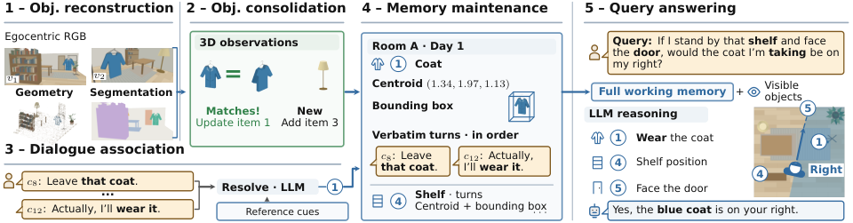

Paper Analysis
01 · A Query Needs Both Histories
论文把任务称为 Spatially grounded Conversational Reasoning。视觉能提供形状、位置、可见性，却不能直接告诉模型“这个物品属于谁”“用户打算保留还是送走”。这些事实来自对话，必须绑定到同一个物理对象，后续空间查询才能组合两种证据。
形式上，问题要求找到同时满足对话条件 h(o) 和空间条件 r(o) 的对象集合。回答可能是一个实例、布尔值或集合大小。计数要求找全符合条件的对象，检索到一张看似相关的图往往不够。零个结果更不能由“没有检索到”直接推出。
四个难度层次分别是 C1 对象重识别，C2 定性关系，C3 大小和距离等几何量，C4 假设视点或摆放后的关系。不同场景保留独立坐标系，在各场景内判断后汇总；不需要把不同房间硬注册到一个共同原点。
S_k = {o observed before query k : h_k(o) AND r_k(o)}
Count answer = |S_k|
Memory must preserve object identity, conversational state, and spatial evidence.Paper Analysis
02 · Reading the Five-Stage Figure

Jiazhou Liang et al. · Original figure, unmodified · CC BY 4.0 · Paper & Caption ↗
Figure 3 左上从 RGB 得到深度、相机与对象掩码，建立逐帧三维对象观测。中间把同一对象的新观测合入已有记录，没匹配上的对象建立新记录。左下另一条输入是对话，关联模型解析“那件外套”等指代，将相关原话挂到对应实例。
右侧每条 memory 包含类别、中心、包围盒，以及按顺序排列的原始对话。图中先说不带外套，后来改为要穿；回答时既要读取最新意图，也要用架子、门和外套的几何关系判断假设朝向下的左右。
最后输入 LLM 的是完整对象 memory、当前可见对象和问题，没有 Top-K 检索。这样避免在计数时先把某些候选丢掉，但也意味着对象数和对话增多后上下文仍会增长。对象压缩减少的是重复帧记录，不是无限期固定容量。
Paper Analysis
03 · From Masks to Persistent Object Records
几何使用 DA3-Nested-Giant-Large，从 RGB 估计近似公制深度、内参与位姿；分割采用 SegVGGT 和预定义类别词表。墙与地面用于场景结构，不作为对象记录。官方重建代码说明还使用 DA3-Streaming、SALAD 和 DINOv2 外观信息，输入采样为 5 fps。
掩码不是直接整块提升到三维。先取内部像素的中心深度范围作为参考，再以容差保留深度一致的像素，减少边缘背景污染。高置信点经坐标变换进入场景坐标；中心取均值，轴对齐包围盒排除极端离群点。场景竖直方向由地面或其他主平面估计，水平轴沿主墙方向。
匹配先限制同类候选，再计算当前对象点中有多少距离历史对象点不超过 10 cm。只有最佳候选足够强且明显优于其他候选才接受；整帧联合匹配，每个历史对象至多接收一个当前实例，避免把同时可见的相邻同类物体合并。
池内碎片合并还要求三维重叠、从未同帧共现，以及共享轨迹或外观支持。低频孤立对象会被清理。类别可保留最多两个候选标签，但必须告诉关联与回答模型：这些标签描述同一个对象，不是额外实例。
这些操作更新的是外部点集和对象记录。论文没有用对话语义 loss 反向训练 DA3，也没有展示语义反馈提升深度。近似公制尺度和轴对齐包围盒对距离、能否容纳等问题有用，但不等同于精确形状或碰撞几何。
Paper Analysis
04 · Dialogue Updates Without Replacing the Evidence
关联模型读取问题之前的对话和已观测对象，输入包含类别、坐标、框与可见性。附录按每次问题的前缀组织关联，附近两秒的可见对象也受前缀限制，当前问题本身被隐藏。因果可用信息不等于已经证明低延迟逐帧处理。
关联不仅识别提到哪个名词，还区分 subject 和 locator。例如“笔记本旁边的显示器属于 Sam”，所有权挂在显示器上，笔记本只是定位参照。若主体无法唯一识别，就不分配，避免把不确定句子强行变成事实。
对象下面保存原话及标出的指代片段，不以自动摘要替换。一个句子谈到多个对象时，会出现在多个记录下，但各自标出对应分句。这样保留修订证据，同时也可能重复文本；最新状态主要由回答模型结合时间顺序解释。
基准明确区分 correction 与 state change。前者说之前记错了，会改写追溯答案；后者表示后来改变决定，旧状态在过去时段仍有效。不能简单覆盖最后一个字符串，否则无法回答历史问题。
整个方案组合预训练重建、分割和语言模型，没有报告端到端的语义—几何联合训练目标。推理更新 memory 是增添、匹配和组织外部记录，不是优化模型权重。
W_k(o) = (spatial_record(o), ordered original turns linked to o) answer_k = LLM(query_k, currently_visible_objects, full W_k) No top-K retrieval is used in the proposed answering path.
Paper Analysis
05 · How the Benchmark Is Constructed and Scored
Ego-SpaCR 使用真实 ScanNet 房间，但人物角色、物品事实、对话和访问顺序为构造内容，不是自然采集的长期人机使用记录。95 段会话跨 620 个视频 session，总计 6.4 小时；每会话平均约 230 轮对话。39 个场景提供对象几何与标注。
先指定事实和带确定性程序的问题，再让 Writer 生成对话；独立 Reader 从实际对话恢复事实，程序重算答案，最后人工核验。构造答案使用 ScanNet 几何真值，方法默认重建仍从 RGB 估计，两种输入条件必须分开。
发布包含 3218 个问题，其中 118 个不需要空间证据，被排除出官方评分，实际评测为 3100 题；完整对话仍保留。计数题占 85.4%，对象识别 13.4%，布尔题 1.2%，因此总准确率主要反映计数任务。
几何边界计数采用 4 cm 容差，并将接受区间宽度限制为最多两个计数差。对象描述由 VLM 在打乱后的候选集中解析，只有唯一定位真值才算对，避免“那张桌子”这种泛称被宽松接受。计数另外报告对象 recall，以排除猜对数字但找错对象。
成本采用统一的 reference input tokens：文字用 o200k_base，每张 640×480 图按 32×32 patch 计 300 tokens。它衡量最终回答输入，不含重建、关联、检索、摘要、工具调用和输出成本，因此“输入少四倍”不能改写成总运行费用或时延少四倍。
Paper Analysis
06 · Evidence for Geometry and Object-Centric Organization
整体最佳 SpaC-MEM+GPT-5.6 Luna 为 52.5，最强表内基线 Gemini Agentic 为 43.1；但骨干不同，9.4 点不能当成纯 memory 增益。下表优先列同 GLM-5.3 Flash 的对照，其中方法完整值为 51.5。
最有解释力的消融是保留或去除空间记录：总体 51.5→34.9，C4 60.3→24.5；补上每对象 RGB 图也只追回少部分。它支持“显式几何比仅有对象类别和身份更适合这些空间查询”，不证明学习了更好的重建。
对象级记录相较逐帧记录平均少用 4.7 倍输入 tokens，准确率相近；11 个 session 时上下文压缩约 5.1 倍。附录中逐帧方案的 Luna 对象 recall 从首 session 的 73% 降到第 11 个的 35%，对象级方案维持约 70%。这更直接说明去掉重复观测有助于覆盖长历史。
预测对话关联保留约 89% 的人工关联版本准确率，这是比值，不是 89% 的关联正确率。将真值框或真值几何提供给其他基线也没有消除所有 C4 问题，说明只测量局部量仍不足以替代可组合的空间记录。
| Method / GLM-5.3 Flash | Overall | C3 | C4 |
|---|---|---|---|
| Conversation Only | 27.6 | 22.0 | 23.2 |
| Uniform Frames | 26.2 | 20.5 | 16.8 |
| M2A | 21.0 | 10.8 | 13.1 |
| SpaC-MEM | 51.5 | 38.2 | 60.3 |
Paper Analysis
07 · Reconstruction Fidelity and What Transfers
附录单独核对 39 场景、864 个标注对象。先用相机位置对齐重建和标注坐标，再按中心距离一对一匹配；0.5 m 阈值下实例 recall 91.1%，precision 67.0%，要求类别正确后的 recall 82.2%。匹配对象中心误差中位数 16.2 cm，但框 IoU≥0.25 的 recall 只有 51.7%。
这些数字说明“找到了大致位置”与“恢复准确尺寸范围”仍有距离。0.5 m 中心匹配的高召回不能直接支持精细装箱、碰撞或表面重建。主实验 C3 也只到 38.2–39.9，几何问题仍是明显瓶颈。
官方仓库提供重建、对话关联、memory 构造及部分评分路径；完整自由文本对象描述 judge 和其他论文基线不都包含在发布包内。本次没有运行模型。复现时应核对官方 3100 题过滤，以及是否使用 reconstructed 或 annotated 模式，避免将真值辅助结果混入默认结果。
与 MEMO 的区别很清楚：MEMO 检索少数原始片段，适合找局部相关证据；SpaC-MEM 保留并读取全体对象，适合需要完整集合的查询。两者都提醒我们按任务选择历史单位。
对语义写入 LingBot-Map memory，本文可作为下游评价依据：几何加语义应支持跨帧对象和关系查询。但若研究主张是语义让重建更准，仍必须另外建立可微写入路径和几何对照。本文证据的方向是“保留几何帮助语言任务”，不能反向解读。
Discussion
Reading Questions
Why provide the full memory?
计数和否定查询需要覆盖全部候选，Top-K 可能漏掉对象；代价是上下文仍随对象和对话数量增长。
Is conversational semantics used to train reconstruction?
没有报告这样的联合 loss。对话被关联到已重建对象，改的是外部记录和回答输入。
What does the geometry ablation establish?
在该空间对话基准中，坐标与包围盒对答案有明显价值；它不隔离几何质量改善，也不证明语义改善了几何。
Are the data natural long-term conversations?
视频房间来自真实 ScanNet，但事实、对话和会话访问编排经过程序、语言模型及人工核验构造。
References
Original Figure 3 is reproduced without modification under CC BY 4.0. First submitted and read version: October 4, 2026, v1. Repository documentation was checked; models and benchmark results were not reproduced.
Verified on 2026-10-26. Paper results refer to the linked versions. Repository references were checked on this date.